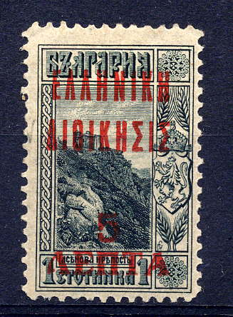
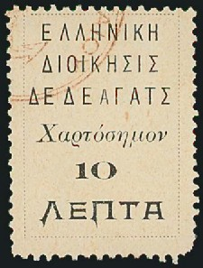
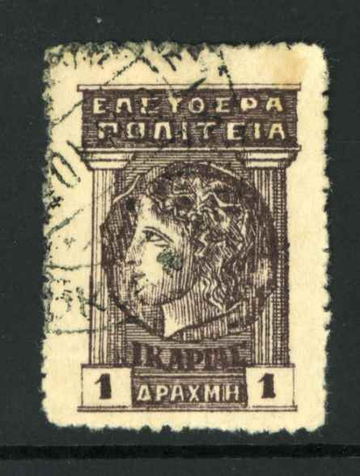

{kind=link}



Cavalle, Chios, Dedeagh, Icaria, Lemnos, Mytilene, Samos, Thrace
Return To Catalogue - Greece overview
Note: on my website many of the
pictures can not be seen! They are of course present in the
catalogue;
contact me if you want to purchase the catalogue.
5 l on 1 s grey 10 l on 10 s red and black 10 l on 15 s yellow 10 l on 25 s blue and black 15 l on 2 s red and black 20 l on 3 s red and black 25 l on 5 s green and black 50 l on 10 s red and black 1 D on 15 s yellow 1 D on 30 s blue and black 1 D on 50 s yellow and black
These stamps are very rare, forgeries exist!
Value of the stamps |
|||
vc = very common c = common * = not so common ** = uncommon |
*** = very uncommon R = rare RR = very rare RRR = extremely rare |
||
| Value | Unused | Used | Remarks |
| 5 l on 1 s | RR | RR | |
| 10 l on 10 s | RRR | RRR | |
| 10 l on 15 s | RR | RR | |
| 10 l on 25 s | RR | RR | |
| 15 l on 2 s | RR | RR | |
| 20 l on 3 s | RR | RR | |
| 25 l on 5 s | RR | R | |
| 50 l on 10 s | RR | RR | Exists with blue overprint: RR |
| 1 D on 15 s | RR | RR | |
| 1 D on 30 s | RRR | RRR | |
| 1 D on 50 s | RRR | RRR | |

Fiscal stamp of Turkey with similar Greec overprint
A French post office also issued stamps in Cavalla (inscription or overprint 'CAVALLE'), they are listed in Cd 1.
Chio

25 l blue
This stamp was only used on the island of Chios.
Value of the stamps |
|||
vc = very common c = common * = not so common ** = uncommon |
*** = very uncommon R = rare RR = very rare RRR = extremely rare |
||
| Value | Unused | Used | Remarks |
| 25 l | *** | *** | |
I've seen forged overprints.
I don't know when the following stamps of Turkey with overprint 'Ellhnich Katoch Cion' were issued:

5 (PENTE) l black 10 (PEKA) l black 25 l black
The perforation of these stamps is 11 1/2.
Value of the stamps |
|||
vc = very common c = common * = not so common ** = uncommon |
*** = very uncommon R = rare RR = very rare RRR = extremely rare |
||
| Value | Unused | Used | Remarks |
| 5 l | R | R | |
| 10 l | *** | *** | |
| 25 c | ** | ** | |
5 l on 1 s (red overprint) 10 l on 10 s 25 l on 5 s 50 l on 2 s 1 D on 25 s (red overprint)
Value of the stamps |
|||
vc = very common c = common * = not so common ** = uncommon |
*** = very uncommon R = rare RR = very rare RRR = extremely rare |
||
| Value | Unused | Used | Remarks |
| 5 l on 1 s | RR | RR | |
| 10 l on 10 s | R | *** | |
| 10 l on 5 s | R | *** | |
| 50 l on 2 s | RR | RR | |
| 1 D on 25 s | RR | RR | |
Forged overprints exist!

1 l blue 2 l blue 3 l blue 5 l blue 10 l blue 25 l blue 40 l blue 50 l blue
I've seen a sheet of 8 stamps with all the values inside (from upper left to lower right in order of appearance: 5 l, 1 l, 10 l, 2 l, 25 l, 3 l, 50 l and 40 l). The perforation of these stamps is 11 1/2.
Value of the stamps |
|||
vc = very common c = common * = not so common ** = uncommon |
*** = very uncommon R = rare RR = very rare RRR = extremely rare |
||
| Value | Unused | Used | Remarks |
| All values | RR | R | |
(Reduced sizes)
1 l blue 5 l blue 10 l blue 25 l blue 30 l blue 50 l blue
The perforation of these stamps is 11 1/2.
Value of the stamps |
|||
vc = very common c = common * = not so common ** = uncommon |
*** = very uncommon R = rare RR = very rare RRR = extremely rare |
||
| Value | Unused | Used | Remarks |
| All values | RR | R | |

A French post office also issued stamps in Dedeagh, they are listed in Cd 1.
2 l orange 5 l green 10 l red 25 l blue 50 l lilac 1 D brown 2 D red 5 D grey
The perforation of these stamps is 11 1/2.
Value of the stamps |
|||
vc = very common c = common * = not so common ** = uncommon |
*** = very uncommon R = rare RR = very rare RRR = extremely rare |
||
| Value | Unused | Used | Remarks |
| 2 l to 50 l | *** | *** | |
| 1 D | R | R | |
| 2 D | R | R | |
| 3 D | RR | RR | |

Forgery of the 1 D value, note the position of the two final
'A's.
1 l green 2 l red 3 l red 5 l green 10 l red
Value of the stamps |
|||
vc = very common c = common * = not so common ** = uncommon |
*** = very uncommon R = rare RR = very rare RRR = extremely rare |
||
| Value | Unused | Used | Remarks |
| All values | RR | RR | |
I have never seen these stamps, but I have seen forgeries of all values, examples:
(Forged overprints, reduced sizes)


With black overprint (on engraved and/or lithographed basic stamps) 1 l green 2 l red 3 l red 5 l green 10 l red 20 l lilac (1901 issue) 20 l lilac 25 l blue 30 l red 40 l blue 50 l violet 1 D blue 2 D red 3 D red 5 D bue 10 D blue 25 D blue
Value of the stamps |
|||
vc = very common c = common * = not so common ** = uncommon |
*** = very uncommon R = rare RR = very rare RRR = extremely rare |
||
| Value | Unused | Used | Remarks |
| 1 l | c | c | Engraved or lithographed |
| 2 l | * | * | Engraved |
| 3 l | * | * | Engraved |
| 5 l | * | * | Engraved or lithographed |
| 10 l | * | * | Engraved or lithographed |
| 20 l | * | * | 1901 issue |
| 20 l | * | * | Engraved |
| 25 l | ** | ** | Engraved or lithographed |
| 30 l | * | * | Engraved |
| 40 l | *** | *** | Engraved |
| 50 l | *** | *** | Engraved |
| 1 D | *** | *** | Engraved |
| 2 D | *** | *** | Engraved |
| 3 D | *** | *** | Engraved |
| 5 D | R | R | Engraved |
| 10 D | RR | RR | Engraved |
| 25 D | RR | R | Engraved |
Red overprint (on engraved or lithographed basic stamps)


1 l green 2 l red 3 l red 20 l lilac 30 l red 40 l blue 50 l violet 1 D blue 2 D red 3 D red 5 D blue 10 D blue 25 D blue
Value of the stamps |
|||
vc = very common c = common * = not so common ** = uncommon |
*** = very uncommon R = rare RR = very rare RRR = extremely rare |
||
| Value | Unused | Used | Remarks |
| 1 l | * | * | Lithographed |
| 2 l | * | * | Engraved |
| 3 l | * | * | Lithograped |
| 5 l | * | * | Lithographed |
| 10 l | ** | ** | Lithographed |
| 20 l | *** | *** | Engraved |
| 25 l | * | * | Lithographed |
| 30 l | *** | *** | Engraved |
| 40 l | *** | *** | Engraved |
| 50 l | *** | *** | Engraved |
| 1 D | *** | *** | Engraved |
| 2 D | R | R | Engraved |
| 3 D | R | R | Engraved |
| 5 D | RR | RR | Engraved |
| 10 D | RR | RR | Engraved |
| 25 D | RR | RR | Engraved |
Several misprints, inverted and double overprints exists of the above stamps.

1 l green
Value of the stamps |
|||
vc = very common c = common * = not so common ** = uncommon |
*** = very uncommon R = rare RR = very rare RRR = extremely rare |
||
| Value | Unused | Used | Remarks |
| 1 l | * | * | |
2 pa olive 5 pa yellow 10 pa green 20 pa red 1 Pi blue 1 Pi black on red (postage due stamp) 2 Pi black 2 1/2 Pi brown 5 Pi lilac 10 Pi red Already with turkish overprint 10 pa green 20 pa red 1 Pi blue 2 Pi black
The overprint exists reading upwards or downwards (same value).
Value of the stamps |
|||
vc = very common c = common * = not so common ** = uncommon |
*** = very uncommon R = rare RR = very rare RRR = extremely rare |
||
| Value | Unused | Used | Remarks |
| 2 pa | *** | ** | |
| 5 pa | *** | *** | |
| 10 pa | *** | *** | |
| 10 pa | R | R | with additional Turkish overprint |
| 20 pa | *** | *** | |
| 20 pa | R | R | with additional Turkish overprint |
| 1 Pi blue | R | R | |
| 1 Pi blue | R | R | with additional Turkish overprint |
| 1 Pi black on red | RRR | RRR | Postage due stamp |
| 2 Pi | RR | RR | |
| 2 Pi | RR | RR | with additional Turkish overprint |
| 2 1/2 Pi | RR | RR | |
| 5 Pi | RR | RR | |
| 10 Pi | RRR | RRR | |
With further overprint LEPTA or DRACMH, DIDRACHMON

'LEPTA 25' (red, = 25 l) on 2 pa olive 'LEPTA 50' (blue, = 25 l) on 20 pa red 'DRACMH' (= 1 D) on 20 pa red (with turkish overprint) 'DIDRACHMON' (= 2 D) on 1 Pi blue
The basic overprint exists again reading upwards or downwards.
Value of the stamps |
|||
vc = very common c = common * = not so common ** = uncommon |
*** = very uncommon R = rare RR = very rare RRR = extremely rare |
||
| Value | Unused | Used | Remarks |
| 25 l on 2 pa | *** | *** | |
| 50 l on 20 pa | *** | *** | |
| 1 D on 20 pa | R | R | |
| 2 D on 1 Pi | R | R | |
The Serrane guide mentions forged overprints made by the forger Fournier (Geneva, Switzerland), which can be recognized by the second downstroke of the 'N's (which are vertical and uniformly thick in the forgeries).
Fournier forged overprint from a Fournier Album (reduced size)
A Russian postoffice existed in Mytilena (Metelin), click here for more information.

On postage stamps of Greece of 1917 1 l green 2 l red 3 l red 10 l red 15 l blue 20 l violet 25 l blue Similar overprint on postage due stamps of Greece 10 l red 20 l violet
Value of the stamps |
|||
vc = very common c = common * = not so common ** = uncommon |
*** = very uncommon R = rare RR = very rare RRR = extremely rare |
||
| Value | Unused | Used | Remarks |
| All values | RR | RR | |
{kind=link}
{kind=link}